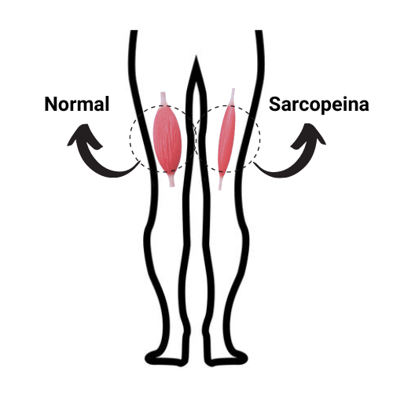

DIAGNÓSTICO DE SARCOPENIA
NOME:
IDADE: ANOS
SEXO: ( )F ( )M
DATA:
| Coleta de Dados | Valores |
|---|---|
| Sarc-Calf (somatório dos pontos - referência >= 11) | 16 |
| Test TSL (>= 15 seg) | 15 |
| Bioimpedância (MMEA) | 33,7 |
| Test TUG (>= 20 s) | 9,8 |

NOME:
IDADE: ANOS
SEXO: ( )F ( )M
DATA:
| Coleta de Dados | Valores |
|---|---|
| Sarc-Calf (somatório dos pontos - referência >= 11) | 16 |
| Test TSL (>= 15 seg) | 15 |
| Bioimpedância (MMEA) | 33,7 |
| Test TUG (>= 20 s) | 9,8 |
Interpretação do Sarc-Calf: Sarcopenia Positiva
Teste TSL: Fraqueza muscular
Bioimpedância: Massa muscular normal
Test TUG (tempo em segundos): Velocidade de caminhada normal